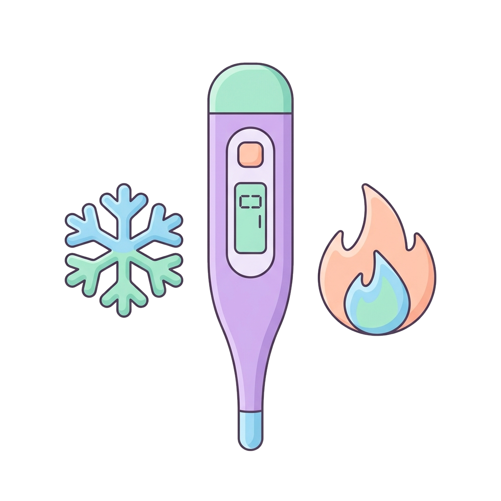
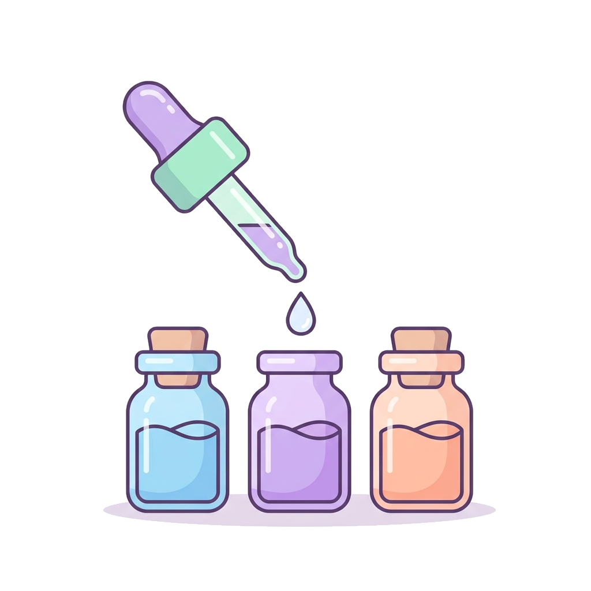

4 · Approcci terapeutici
Approcci terapeutici
Allopatia


Dal greco, si basa sul principio della
guarigione attraverso gli opposti. Usa farmaci progettati per causare
sull'organismo effetti opposti ai sintomi della malattia: se il corpo si scalda
con la febbre, il medicinale agisce per raffreddarlo.

Febbre → antipiretico: il farmaco abbassa la temperatura.
Infiammazione → antinfiammatorio: blocca il processo in corso.
Infezione → antibiotico: contrasta l'agente che l'ha causata.
Proprio per questo
meccanismo di contrasto diretto, la maggior parte delle classi riceve il prefisso
«anti-»: agiscono bloccando o invertendo il processo patologico.
Omeopatia
Opera nella logica opposta: «il simile cura il simile». Utilizza sostanze diluite e dinamizzate che, nelle persone sane, causerebbero gli stessi sintomi della malattia.

Fitoterapia
Usa medicinali di origine esclusivamente vegetale.
Nota: i principi attivi isolati (per esempio caffeina pura o morfina) non sono fitoterapici: serve l'estratto grezzo o la pianta trasformata.
13